Sampling Distributions & Interval Estimation
“We ran algorithm B for 30 days and saw a mean eRPM of about $3.46. But June is over. What is B’s true mean eRPM going forward, and how close can 30 days really get us?”
The big call you own as the manager: roll out B, or stay with A? You cannot make it on a single 30-day number whose error you can’t name.
Today’s question (Lecture 1): how trustworthy is a 30-day sample mean? Until now we described the 30 days we have; today we generalize to the days we don’t have, every future impression B will serve.
The 30-day mean $3.46 is a single point estimate. By itself it hides the question the manager must ask: how much could it be off? This lecture quantifies that wobble; the next turns it into a range.
| Lecture | The question | The tool |
|---|---|---|
| 1 | How trustworthy is a 30-day sample mean? | Sampling distribution, standard error, the CLT |
| 2 | What is B’s true mean eRPM, give or take? How many days do we need? | Confidence intervals, margin of error, sample size |
A different 30 days (say, July) would give a different mean eRPM. So would any other random sample.
That wobble is not a mistake; it is the price of working from a sample instead of the whole population.
Lecture 1’s question: if the sample mean changes every time we sample, how can the manager trust any one of them? The answer is the sampling distribution, and it is surprisingly well-behaved.
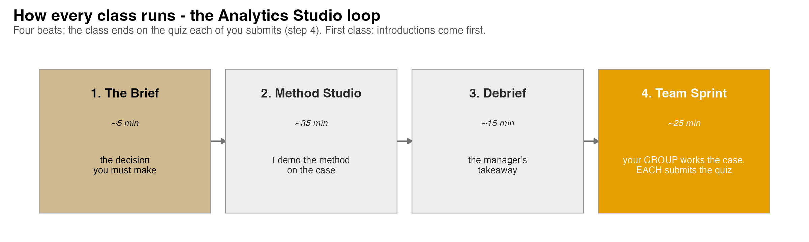
The class ends on the Team Sprint, your group’s graded submission: a decision plus your read of the analysis, one PDF before you leave.
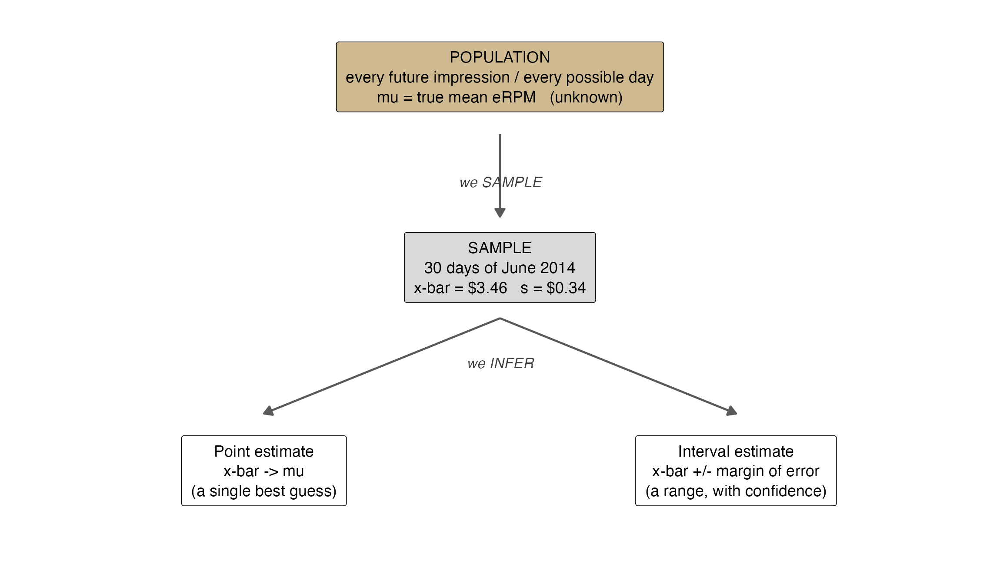
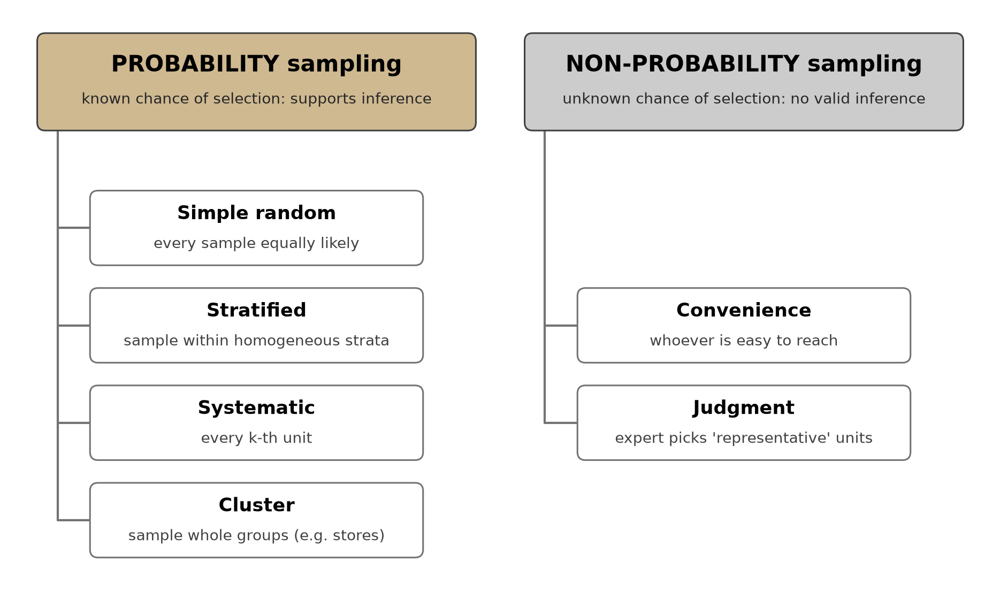
| Population parameter | Point estimator (statistic) |
|---|---|
| mean \(\mu\) | sample mean \(\bar{x}\) |
| standard deviation \(\sigma\) | sample SD \(s\) |
| proportion \(p\) | sample proportion \(\bar{p}\) |
Point estimation uses one sample to compute a single number as our best guess of the parameter.
A different random sample gives a different estimate, so a point estimate alone never tells us how close we are.
St. Andrew’s received 900 applications. The Director wants the mean SAT score and the proportion wanting on-campus housing, before the full data are entered.
She draws a simple random sample of \(n = 30\) applicants:
| Parameter | True value (later) | Sample estimate (\(n=30\)) |
|---|---|---|
| Mean SAT \(\mu\) | 1697 | \(\bar{x} = 1684\) |
| SD \(\sigma\) | 87.4 | \(s = 85.2\) |
| Proportion housing \(p\) | 0.72 | \(\bar{p} = 0.67\) |
| Parameter (true, going forward) | Point estimate from 30 days |
|---|---|
| Mean eRPM, Algorithm A | \(\bar{x}_A = \$3.347\) |
| Mean eRPM, Algorithm B | \(\bar{x}_B = \$3.459\) |
| Mean daily conversion rate, B | \(\bar{x} = 0.354\%\) |
Follow along:
erpm_B).Confidence Level(95.0%) row is the margin \(E\) we build the interval from next.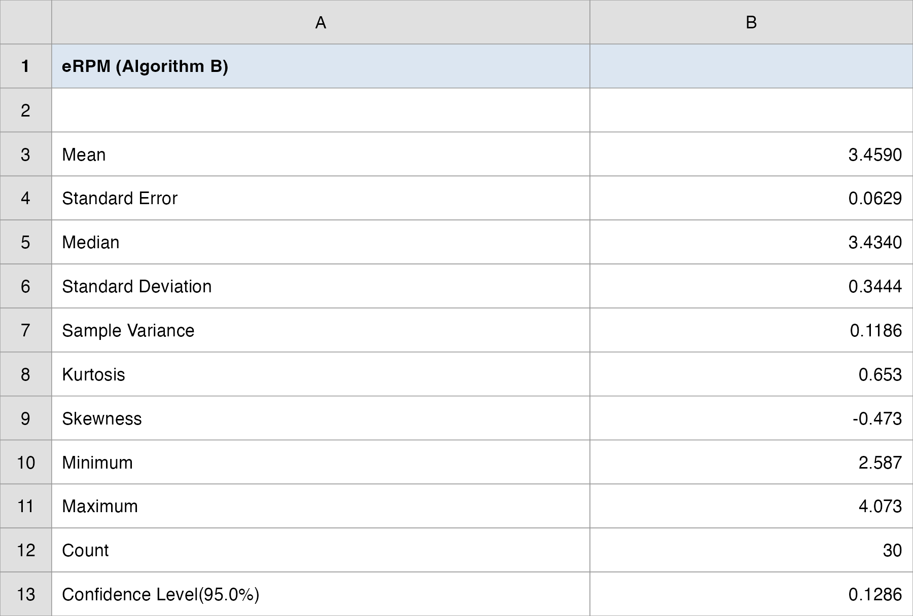
A question that often comes up at this point:
If a point estimate like \(\bar{x}_B = \$3.459\) is never exactly the true mean, why report a single number at all?
Short answer: \(\bar{x}_B = \$3.459\) is still the best single guess we have, and every revenue projection has to start somewhere. The point is not to throw it away; it is to attach a measure of how far off it might be. That measure is the standard error, and the rest of the topic turns $3.459 into a defensible range around it.
Imagine drawing many random samples of size \(n\), computing \(\bar{x}\) for each. Collect all those \(\bar{x}\) values.
Their distribution is the sampling distribution of \(\bar{x}\), the probability distribution of the sample mean.
Do not confuse two distributions:
The sampling distribution is what lets us say how close our \(\bar{x}\) is likely to be to \(\mu\).
\[ E(\bar{x}) = \mu \]
\[ \sigma_{\bar{x}} = \frac{\sigma}{\sqrt{n}} \]
Two terms not to confuse: the sampling error is the gap \(\bar{x} - \mu\) for one sample (we never see it, since \(\mu\) is unknown); the standard error \(\sigma_{\bar{x}}\) is the typical size of that gap across all samples (we can compute it).
The estimate is unbiased (centered on the truth) and gets more precise as \(n\) grows.
The standard error \(\sigma/\sqrt{n}\) depends on the sample size \(n\), not on how big the population is.
This is the wonderful part: to halve the wobble of your estimate you need four times the data (\(\sqrt{n}\)), and it does not matter whether the population is 900 applicants or billions of impressions.
| St. Andrew’s: \(\sigma = 87.4\) | \(\sigma_{\bar{x}} = 87.4/\sqrt{n}\) |
|---|---|
| \(n = 30\) | \(15.96\) |
| \(n = 100\) | \(8.74\) |
A question that often comes up at this point:
Vungle serves billions of impressions. How can 30 days possibly say anything about a population that huge?
Short answer: the standard error is \(\sigma/\sqrt{n}\), and the population size \(N\) is nowhere in it. A 30-day sample is exactly as precise whether the population is 900 St. Andrew’s applicants or Vungle’s billions of impressions. Precision rides on how many days you sampled, not on how big the world you sampled from is.
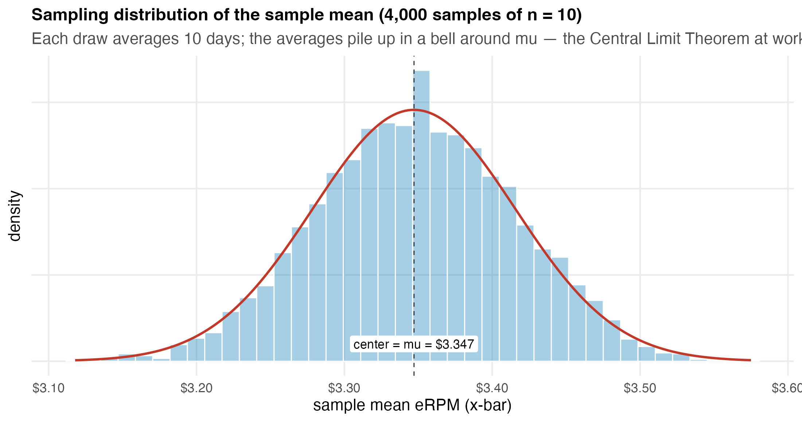
\[ \bar{x} \;\sim\; \text{approximately } N\!\left(\mu,\; \frac{\sigma^2}{n}\right) \quad \text{as } n \text{ grows} \]
It works regardless of the population’s shape: skewed, uniform, or lumpy, it does not matter.
Rule of thumb: \(n \geq 30\) is usually enough; \(n \geq 50\) if the population is highly skewed or has outliers. Vungle’s \(n = 30\) sits right on the line.
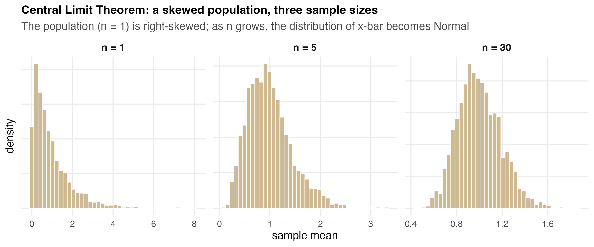
The CLT is the engine behind every interval we build today: it is why B’s sample mean \(\bar{x}_B\) stacks up in a Normal curve around the true \(\mu\), even though B’s 30 daily eRPMs are not perfectly bell-shaped. Watch it happen, then move the sliders yourself.
Bunnies, Dragons and the ‘Normal’ World (NYT)
Seeing Theory (interactive)
St. Andrew’s: with \(\sigma = 87.4\) and \(n = 30\), what is the probability the sample mean SAT lands within 10 points of the true \(\mu = 1697\) (i.e., between 1687 and 1707)?
\[ \sigma_{\bar{x}} = \frac{87.4}{\sqrt{30}} = 15.96, \qquad z = \frac{10}{15.96} = 0.63 \]
\[ P(1687 \le \bar{x} \le 1707) = P(-0.63 \le Z \le 0.63) = 0.4714 \]
Read it: a single sample of 30 has only about a 47% chance of landing within 10 SAT points of the truth: precision you can now quantify, and improve by raising \(n\). In Excel: =NORM.S.DIST(0.63,TRUE)-NORM.S.DIST(-0.63,TRUE).
A question that often comes up at this point:
Vungle’s 30 daily eRPMs are not perfectly bell-shaped. Does the CLT still apply to our case?
Short answer: yes. The CLT is about the distribution of the sample mean, not the raw daily values. It holds no matter the shape of the daily eRPMs: skewed, lumpy, whatever. At \(n = 30\) the sampling distribution of \(\bar{x}_B\) is already close to Normal, which is what lets us put a \(z\) (or \(t\)) interval around $3.459. The one caution: \(n = 30\) sits on the rule-of-thumb line, so heavy skew or outliers would push us toward wanting more days.
For a yes/no outcome (an impression converts or it doesn’t), the sample proportion is \(\bar{p} = x/n\).
It has its own sampling distribution, centered and spread by:
\[ E(\bar{p}) = p \qquad\qquad \sigma_{\bar{p}} = \sqrt{\frac{p(1-p)}{n}} \]
\[ np \geq 5 \qquad \text{and} \qquad n(1-p) \geq 5 \]
One sentence: a sample mean is an unbiased estimate of the truth, but it wobbles by a standard error of \(\sigma/\sqrt{n}\); thanks to the CLT, that wobble is Normal for \(n \geq 30\).
One number: B’s standard error is \(s/\sqrt{30} = 0.344/\sqrt{30} \approx \$0.063\), the typical gap between a 30-day mean and the truth.
One caveat: precision is bought with \(n\), and only as \(\sqrt{n}\); quadrupling the days only halves the error.
The question (Lecture 1):
How trustworthy is a 30-day sample mean?
The answer we reached today:
A 30-day mean is unbiased (it centers on the truth), but it wobbles by a standard error of \(s/\sqrt{n}\): for B that is \(0.344/\sqrt{30} \approx \mathbf{\$0.063}\). Thanks to the CLT, that wobble is Normal at \(n = 30\), so the gap to the truth is small and now quantifiable: that is what lets us build a range next.
Now it’s your group’s turn. Today’s in-class group case is posted on Brightspace (Topic 07 Group Case, Lecture 1): a separate business decision you make with today’s tools.
What you’ll use: the standard error \(s/\sqrt{n}\) and the sampling distribution of \(\bar{x}\) (CLT, \(n \geq 30\)). Excel: Analysis ToolPak → Descriptive Statistics.
Submit one PDF per group before you leave: your decision plus the numbers behind it.
“Don’t just tell me B earns $3.46. Tell me the range I can bank on, and tell me how many test-days it would take to cut that range in half.”
The big call you still own as the manager: roll out B, or stay with A? A single $3.46 with no range cannot support it.
Today’s question (Lecture 2): what is B’s true mean (and conversion rate), give or take, and how big a sample do we need? We attach a margin of error and report an interval we are 95% confident contains the truth.
Then we invert the question: pick the precision first (\(\pm\$0.05\)), and solve for the sample size that delivers it.
The class ends on the Team Sprint, your group’s graded submission: a decision plus your read of the analysis, one PDF before you leave.
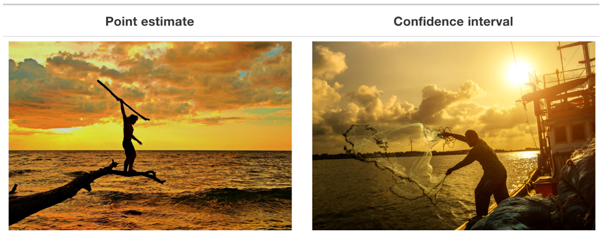
\[ \bar{x} \pm E \qquad\text{where}\qquad E = (\text{a multiplier}) \times (\text{standard error}) \]
The multiplier comes from the sampling distribution: about 1.96 standard errors capture the middle 95% of a Normal curve.
Two cases for the multiplier:
\[ \bar{x} \pm z_{\alpha/2}\,\frac{\sigma}{\sqrt{n}} \]
| Confidence | \(z_{\alpha/2}\) |
|---|---|
| 90% | 1.645 |
| 95% | 1.960 |
| 99% | 2.576 |
In real data we never know \(\sigma\); we estimate it with the sample SD \(s\). That extra uncertainty makes the bell fatter in the tails: the \(t\) distribution.
A \(t\) distribution is indexed by its degrees of freedom \(df = n - 1\) (the \(n\) observations, minus one used up estimating \(s\)).
As \(df\) grows, \(t\) converges to \(z\): by \(df = 29\) they are nearly identical, and beyond \(df = 100\) the difference is negligible.
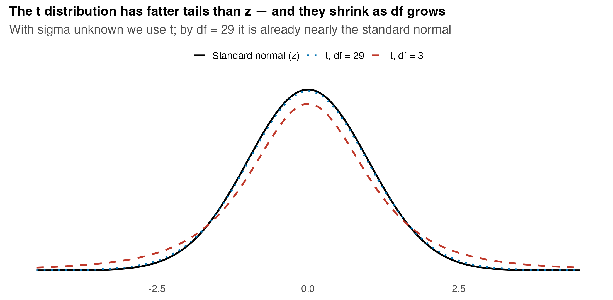
=T.INV.2T(0.05, df) gives the 95% multiplier.A question that often comes up at this point:
At \(df = 29\) the \(t\) multiplier 2.045 is barely above \(z\)’s 1.96. For Vungle’s 30 days, is the difference even worth the trouble?
Short answer: here it is small but not zero: using 2.045 instead of 1.96 widens B’s eRPM margin from about $0.124 to $0.129, the honest cost of not knowing \(\sigma\). The habit matters more than this one case. With a small sample, say \(n = 10\), the gap is large, and “always use \(t\) when \(\sigma\) is unknown” keeps you correct without having to decide each time whether \(n\) is “big enough.”
\[ \bar{x} \pm t_{\alpha/2,\,n-1}\,\frac{s}{\sqrt{n}} \]
The pieces: \(\bar{x}\) the point estimate, \(s/\sqrt{n}\) the standard error, \(t_{\alpha/2,\,n-1}\) the multiplier for confidence level \(1-\alpha\).
Excel multipliers: =T.INV.2T(0.05, n-1) (95%), =T.INV.2T(0.10, n-1) (90%), =T.INV.2T(0.01, n-1) (99%).
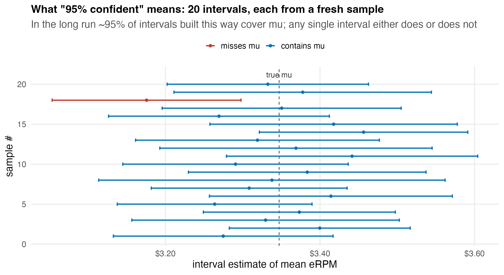
A question that often comes up at this point:
If I can’t say there’s a 95% chance B’s true eRPM is inside ($3.33, $3.59), then what do I actually tell my boss?
Short answer: you tell the boss, “we built this range with a method that captures the true mean 95% of the time, and it puts B’s eRPM between $3.33 and $3.59.” The 95% is your confidence in the procedure, not a betting line on this one interval. In practice the manager acts on the range exactly the same way; the wording just keeps you honest about where the uncertainty lives.
A reporter samples \(n = 16\) one-bedroom apartments near campus: \(\bar{x} = \$750\)/month, \(s = \$55\). Population assumed roughly Normal; \(\sigma\) unknown → \(t\)-interval, \(df = 15\).
\[ t_{0.025,\,15} = 2.131, \qquad \frac{s}{\sqrt{n}} = \frac{55}{\sqrt{16}} = 13.75, \qquad E = 2.131 \times 13.75 = 29.31 \]
\[ 750 \pm 29.31 \;=\; (\$720.69,\; \$779.31) \]
Read it: we are 95% confident the true mean rent for one-bedroom apartments near campus is between $721 and $779. In Excel: =CONFIDENCE.T(0.05, 55, 16) returns the margin $29.31 directly.
1. Business context. B’s true mean eRPM drives every revenue projection; the manager needs a defensible range, not a single number.
2. Setup. \(n = 30\) days, \(\sigma\) unknown, \(\bar{x}_B = \$3.459\), \(s_B = \$0.344\), \(df = 29\), 95% confidence.
3. Compute.
\[ \frac{s}{\sqrt{n}} = \frac{0.344}{\sqrt{30}} = 0.0629, \qquad t_{0.025,\,29} = 2.045, \qquad E = 2.045 \times 0.0629 = 0.1286 \]
4. Interval. \(3.459 \pm 0.129 = (\$3.330,\; \$3.588)\).
5. Manager’s Translation. We are 95% confident B’s true mean eRPM is between $3.33 and $3.59. The $0.13 margin is wide relative to the $0.11 gap over A, a first hint that 30 days may not yet settle the A-vs-B question.
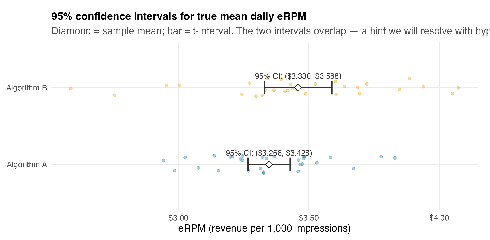
Follow along:
erpm_B).=AVERAGE(range) → \(\bar{x}_B\); =STDEV.S(range) → \(s\).=T.INV.2T(0.05, 29) → the multiplier \(2.045\).=CONFIDENCE.T(0.05, s, 30) → the margin \(E = \$0.129\) in one cell.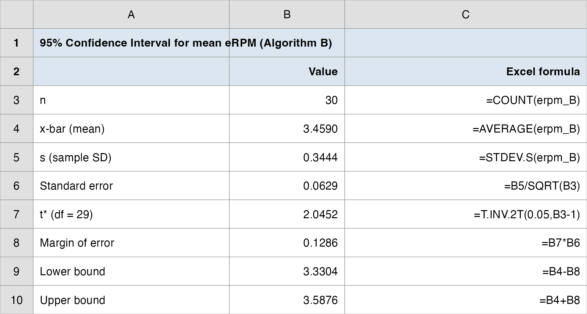
\[ \bar{p} \pm z_{\alpha/2}\sqrt{\frac{\bar{p}(1-\bar{p})}{n}} \]
Check the large-sample condition first: \(n\bar{p} \geq 5\) and \(n(1-\bar{p}) \geq 5\).
Excel: =NORM.S.INV(0.975) → 1.96 for the 95% multiplier.
A question that often comes up at this point:
We just learned to use \(t\) when \(\sigma\) is unknown. For B’s conversion rate we don’t know the true \(p\) either, so why does the proportion interval use \(z\), not \(t\)?
Short answer: the \(t\) exists to fix one specific problem: estimating a separate spread \(s\) for a mean. A proportion has no separate spread; its variability is fixed by \(p\) itself, so there is nothing extra to estimate and no fattened tails to correct. We plug \(\bar{p}\) into the standard error and use \(z\) straight away, after checking \(n\bar{p} \geq 5\) and \(n(1-\bar{p}) \geq 5\).
Political Science Inc. contacts \(n = 500\) registered voters; 220 favor the candidate, so \(\bar{p} = 220/500 = 0.44\). Build a 95% interval for the true share.
\[ \sqrt{\frac{0.44(0.56)}{500}} = 0.0222, \qquad E = 1.96 \times 0.0222 = 0.0435 \]
\[ 0.44 \pm 0.0435 \;=\; (0.3965,\; 0.4835) \]
Read it: PSI is 95% confident that between 39.6% and 48.4% of all voters favor the candidate. The interval straddles 50% from below: too close to call a lead.
| Quantity | Algorithm B |
|---|---|
| mean daily rate | \(0.3538\%\) |
| \(s\) | \(0.0231\%\) |
| standard error | \(0.0042\%\) |
| 95% margin (\(t_{29}\)) | \(0.0086\%\) |
| 95% CI | \((0.345\%,\; 0.362\%)\) |
Follow along:
conv_B_pct).=AVERAGE → \(0.354\%\); =STDEV.S → \(s = 0.023\%\).=CONFIDENCE.T(0.05, s, 30) → margin \(E = 0.0086\%\).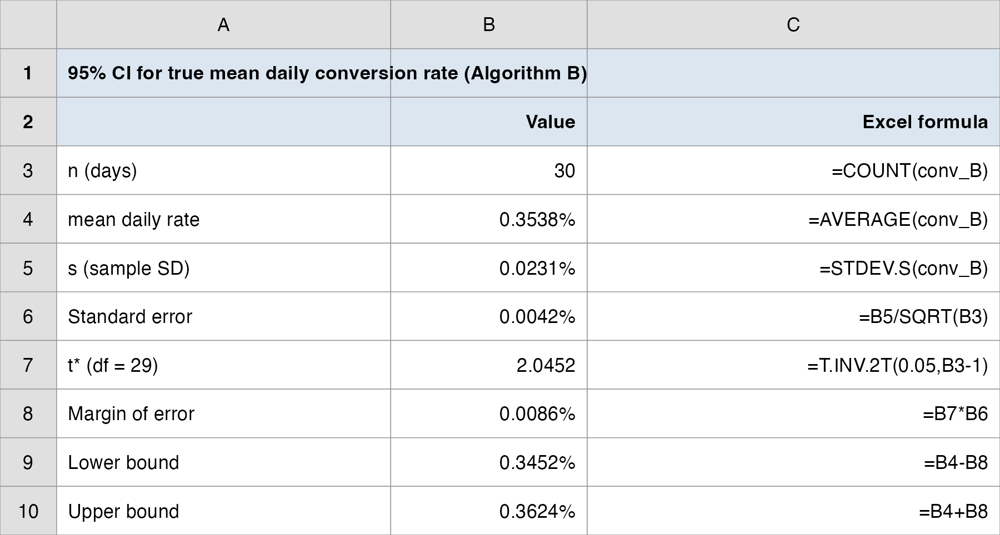
| Lever | Increase it → interval gets | Manager’s control? |
|---|---|---|
| Confidence level (\(1-\alpha\)) | wider (bigger multiplier) | choose it |
| Variability (\(s\)) | wider | not directly |
| Sample size (\(n\)) | narrower (as \(\sqrt{n}\)) | yes: buy more data |
| Confidence | \(t^*\) multiplier | Margin \(E\) | Interval |
|---|---|---|---|
| 90% | 1.699 | $0.107 | ($3.352, $3.566) |
| 95% | 2.045 | $0.129 | ($3.330, $3.588) |
| 99% | 2.756 | $0.173 | ($3.286, $3.632) |
\[ E = z_{\alpha/2}\frac{s}{\sqrt{n}} \qquad\Longrightarrow\qquad n = \left(\frac{z_{\alpha/2}\,s}{E}\right)^{2} \]
Always round up: a fractional person or day cannot be sampled, and rounding down would miss the target precision.
Planning value for \(s\): a prior study, a pilot sample, or a best guess. Here we use B’s pilot \(s = \$0.3444\).
Question: how many test-days for the mean eRPM margin to hit \(\pm\$0.10\)? \(\pm\$0.05\)? (planning \(s = 0.3444\), 95% confidence, \(z = 1.96\))
\[ n_{0.10} = \left(\frac{1.96 \times 0.3444}{0.10}\right)^{2} = 45.6 \;\rightarrow\; \mathbf{46 \text{ days}} \]
\[ n_{0.05} = \left(\frac{1.96 \times 0.3444}{0.05}\right)^{2} = 182.3 \;\rightarrow\; \mathbf{183 \text{ days}} \]
The lesson: halving the margin (\(\$0.10 \rightarrow \$0.05\)) takes four times the days (\(46 \rightarrow 183\)). Precision is expensive, and the manager must decide whether $0.05 of precision is worth six months of testing.
A question that often comes up at this point:
The sample-size formula needs \(s\), but \(s\) is exactly what a longer test is supposed to pin down. Isn’t that circular?
Short answer: it would be, except we use a planning value for \(s\), not the final one. Here we borrow B’s pilot \(s = \$0.3444\) from the 30 days we already have. It only needs to be roughly right to get the day count in the ballpark: \(183\) days for \(\pm\$0.05\). When the real test finishes you recompute \(s\) from the full data and report the actual interval; the planning value is just for sizing the test, not for the final answer.
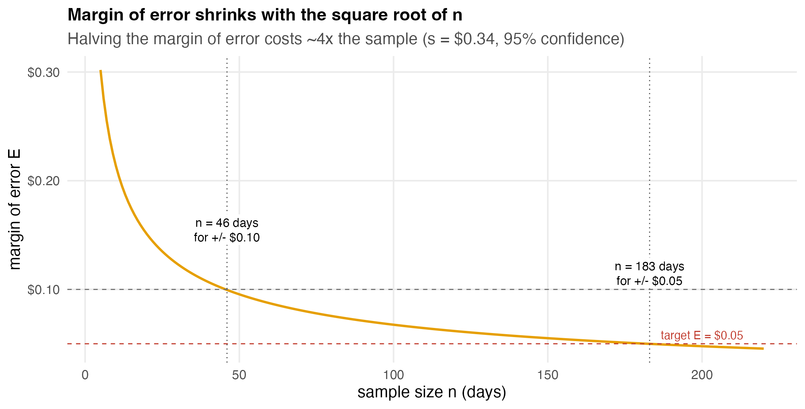
Follow along:
s (B’s pilot \(\$0.3444\)) and the target margin E in cells.=NORM.S.INV(0.975) → the \(z\) multiplier \(1.96\).=CEILING((NORM.S.INV(0.975)*s/E)^2, 1) in one cell.CEILING(...,1) rounds up: never round a day count down.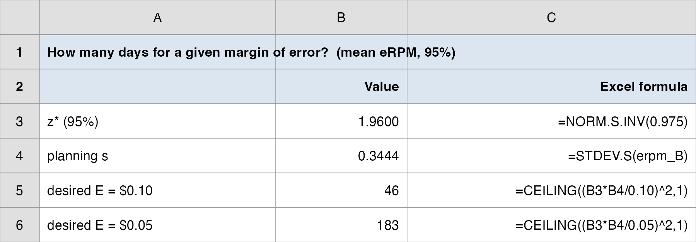
\[ n = \frac{z_{\alpha/2}^{2}\,p^*(1-p^*)}{E^{2}} \]
\(p^*\) is a planning value for the proportion: a prior estimate, a pilot, or (if you know nothing) the conservative \(p^* = 0.5\), which maximizes \(p^*(1-p^*)\) and gives the largest (safest) \(n\).
PSI example: for \(E = 0.03\) at 99% (\(z = 2.576\)): with \(p^* = 0.44\), \(n = 1817\); with the conservative \(p^* = 0.5\), \(n = 1844\). When unsure, plan for the larger.
| Quantity | Point estimate | 95% interval | Read |
|---|---|---|---|
| Mean eRPM (B) | $3.459 | ($3.330, $3.588) | true earning power, \(\pm\$0.13\) |
| Conversion rate (B) | 0.354% | (0.345%, 0.362%) | very stable, \(\pm 0.009\)pt |
| Days for \(\pm\$0.05\) eRPM | (n/a) | \(n = 183\) | six months to halve the margin |
B’s eRPM interval ($3.33, $3.59) and A’s ($3.27, $3.43) overlap. The $0.11 sample gap is real in this sample, but the intervals do not, by themselves, prove B’s true mean beats A’s.
Estimation answers “how big, and how sure are we about that size?”; it does not directly answer “is B better than A?”
That comparison question (does B beat a benchmark, and does B beat A?) is hypothesis testing, the next two topics. Today’s standard error and \(t\) machinery carry straight over.
One sentence: a confidence interval turns a point estimate into a defensible range (B’s true mean eRPM is $3.46 \(\pm\) $0.13 at 95% confidence), and the margin of error is the number the manager should actually negotiate over.
One number to remember: \(E = t_{\alpha/2}\,s/\sqrt{n}\), with the \(\sqrt{n}\) in the denominator that makes precision expensive.
One caveat: “95% confident” describes the procedure over many samples, not a probability for this one interval; overlapping intervals do not settle a comparison.
The question (Lecture 2, and Topic 7 of the ladder):
From 30 days, what is B’s true mean eRPM, give or take, and how big a sample do we need?
The answer we reached today:
We are 95% confident B’s true mean eRPM is $3.46 give or take $0.13, i.e. ($3.33, $3.59), and its conversion rate is 0.354% give or take 0.009pt, i.e. (0.345%, 0.362%). To cut the eRPM margin to \(\pm\$0.05\) takes about 183 days of testing. The eRPM range still overlaps A’s, so estimation alone cannot yet name a winner: that is hypothesis testing, next.
Now it’s your group’s turn. Today’s in-class group case is posted on Brightspace (Topic 07 Group Case, Lecture 2): a separate business decision you make with today’s tools.
What you’ll use: confidence intervals for a mean (\(t\)) and a proportion (\(z\)), the margin of error, and sample size planning. Excel: Analysis ToolPak, plus =CONFIDENCE.T and =CEILING.
Submit one PDF per group before you leave: your decision plus the numbers behind it.
Some key takeaways from this session:
Business Analytics